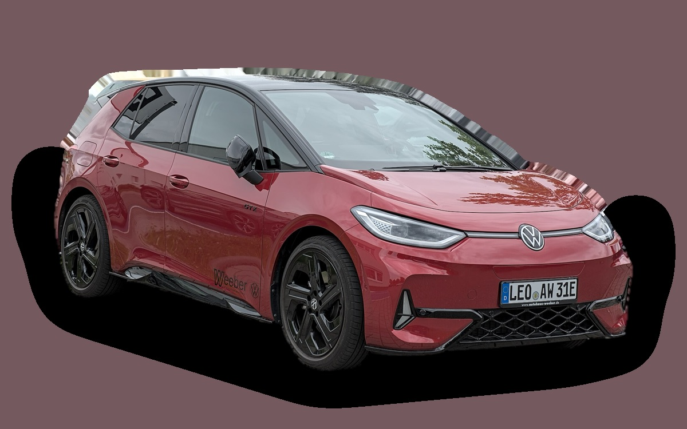
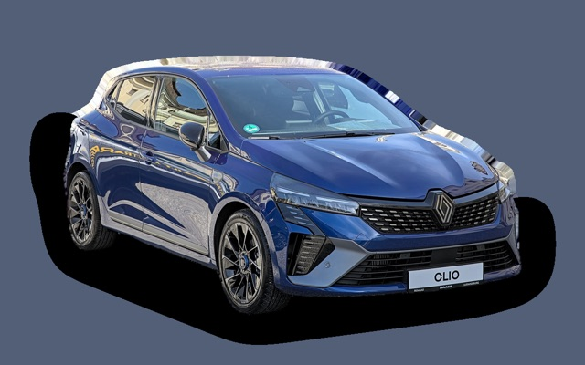

Vad kostar en Volkswagen ID.3 per månad?
En Volkswagen ID.3 från 2023 kostar cirka 2 886 kr i månaden, allt inräknat.


Månadskostnad per årsmodell
| Årsmodell | Version i beräkningen | Pris | Per månad | Betyg |
|---|---|---|---|---|
| 2026 | Pure 52 kWh, Life | 398 100 kr | 4 278 kr | C |
| 2023 | Pure 52 kWh, Life | 267 000 kr | 2 886 kr | B |
| 2020 | Pure 52 kWh, Life | 201 000 kr | 2 435 kr | A |
Räknat på 5 års ägande och 1 250 mil per år, med bränslepriser från 2026-10-22. Månadskostnaden innehåller värdeminskning, drivmedel, service och reparationer, försäkring och fordonsskatt.
Så fördelas kostnaden för en 2023:a
- Värdeminskning: 1 587 kr/mån
- Drivmedel: 395 kr/mån
- Service och reparationer: 310 kr/mån
- Försäkring: 564 kr/mån
- Fordonsskatt: 30 kr/mån
Leasa eller köpa ny?
Volkswagen Privatleasing erbjuder ID.3 Neo Trend 50 kWh från 3 995 kr i månaden i 36 månader och 1 000 mil per år. Så mycket kostar det jämfört med att köpa samma bil ny för 398 100 kr och sälja den efter 36 månader, räknat på 1 250 mil per år och 5 procents ränta.
Leasa är billigast 880 kr mindre per månad, 31 680 kr på 36 månader.
| Per månad | Leasa | Köpa |
|---|---|---|
| Leasingavgift, 1 250 mil per år | 4 168 kr | – |
| Uppläggnings- och aviavgift | 73 kr | – |
| Värdeminskning | – | 3 519 kr |
| Ränta på pengarna, 5 % | – | 1 395 kr |
| Service och reparationer | ingår | 206 kr |
| Drivmedel | 388 kr | 388 kr |
| Försäkring | 682 kr | 682 kr |
| Fordonsskatt | 30 kr | 30 kr |
| Totalt per månad | 5 340 kr | 6 220 kr |
| Totalt på 36 månader | 192 240 kr | 223 920 kr |
Du kör 250 mil mer per år än erbjudandet räknar med. Märkets pris för fler mil: 172 kr i månaden. Volkswagen Privatleasing: ID.3 Neo Trend 50 kWh, 36 månader, 1 000 mil per år, service ingår, rörlig avgift som följer räntan. Uppläggningsavgift 495 kr och aviavgift 59 kr i månaden. Källa: privatleasing.volkswagen.se, avläst 26 oktober 2026, gäller till och med 31 oktober 2026.
Köpa: 398 100 kr för en ny bil i samma version, och 271 414 kr tillbaka när du säljer den efter 3 år. Restvärdet bygger på annonspriserna för 3 år gamla bilar, justerat för att du kör 3 750 mil på 3 år i stället för typiska 4 600 mil. Räntan är vad pengarna kostar: ränta på ett billån, eller räntan du går miste om på sparade pengar. Drivmedel, försäkring och skatt är desamma. Övermil och onormalt slitage betalas när leasingbilen lämnas tillbaka, och byter du in en köpt bil hos en handlare får du oftast mindre än annonspriset.
Räkna med din egen körsträcka och ränta · Alla leasingbilar jämförda
Begagnatpriser i annonser
| Årsmodell | Medianpris | Annonser | Typiskt miltal |
|---|---|---|---|
| 2026 | 359 800 kr | 9 | 1 000 mil |
| 2025 | 395 300 kr | 15 | – |
| 2024 | 309 900 kr | 9 | 4 500 mil |
| 2023 | 302 200 kr | 36 | 4 600 mil |
| 2022 | 282 400 kr | 10 | 5 900 mil |
| 2021 | 227 000 kr | 20 | 8 800 mil |
| 2020 | 224 900 kr | 4 | 7 700 mil |
Medianpriset i svenska annonser per årsmodell i oktober 2026 (källa: Blocket, AutoUncle). Annonspriser är utgångspriser, och slutpriset kan bli lägre.
Motorer och versioner
| Motor | Drivmedel | Effekt | 0–100 km/h | Förbrukning (WLTP) | Räckvidd | Årsmodeller | Pristillägg |
|---|---|---|---|---|---|---|---|
| Pure 52 kWh | El | 170 hk | 8,2 s | 15,3 kWh/100 km | 388 km | från 2020 | – |
| Pro 59 kWh | El | 204 hk | 7,3 s | 15,4 kWh/100 km | 426 km | från 2020 | +30 000 kr |
| Pro S 79 kWh | El | 231 hk | 7,9 s | 15,8 kWh/100 km | 559 km | från 2020 | +86 000 kr |
- Utrustning: Life, Style (+30 000 kr)
Fakta
- Kaross
- Halvkombi
- Årsmodeller
- sedan 2020
- Nypris från
- 398 100 kr
- Bagage
- 385 liter
- Euro NCAP
- 5 av 5 stjärnor
- Nybilsgaranti
- 3 år
- Driftsäkerhet
- 4 av 5
- Helförsäkring, uppskattning
- 8 700 kr/år
- Service, uppskattning
- 2 400 kr/år
Fördelar och nackdelar
Fördel
Rymlig kupé för sin storlek.
Nackdel
Hög värdeminskning.
Liknande bilar

Renault Clio2 878 kr/mån som 2023:a Seat Ibiza2 878 kr/mån som 2023:a
Seat Ibiza2 878 kr/mån som 2023:a Opel Corsa2 829 kr/mån som 2023:a
Opel Corsa2 829 kr/mån som 2023:a Skoda Scala2 821 kr/mån som 2020:a
Skoda Scala2 821 kr/mån som 2020:a Honda Jazz2 974 kr/mån som 2023:a
Honda Jazz2 974 kr/mån som 2023:a Dacia Sandero2 790 kr/mån som 2023:a
Dacia Sandero2 790 kr/mån som 2023:a
Uppdaterad 2026-10-27 · annonsdata okt 2026